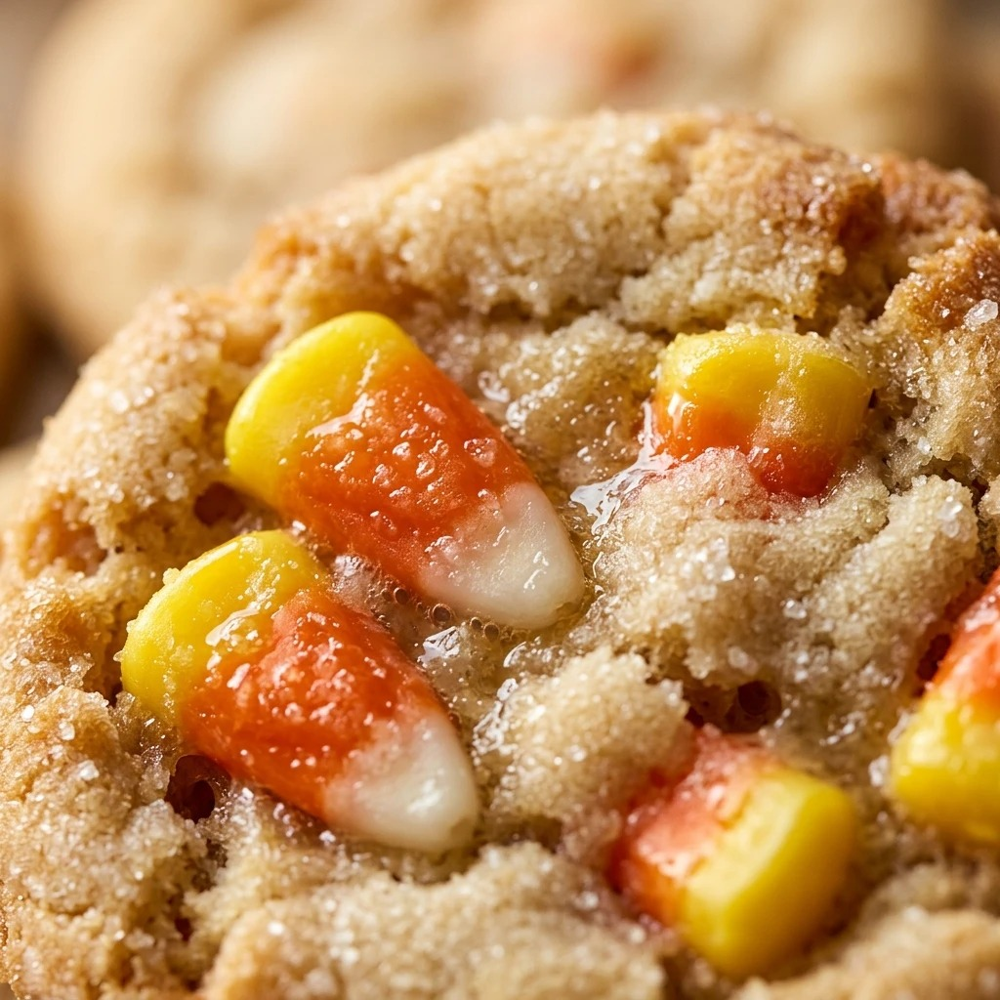

Halloween Candy Corn Sugar Cookies Recipe
October 17, 2026

Nothing says October quite like the iconic colors of candy corn. While the actual candy can be polarizing, everyone agrees that a soft, buttery sugar cookie is a winner. These Halloween Candy Corn Sugar Cookies take the classic look of your favorite fall treat and turn it into a delicious slice-and-bake cookie that will be the star of any spooky celebration.
Recipe Information
Prep Time: 45 minutes
Cook Time: 10 minutes
Total Time: 2 hours 55 minutes (includes chilling time)
Servings: 24 cookies
Difficulty Level: Medium
Nutrition Information
Calories per serving: 165 kcal
Protein: 2g
Carbohydrates: 22g
Fat: 8g
Fiber: 0.5g
Sugar: 12g
Sodium: 95mg